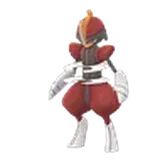
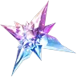

2026 年 11 月社群日
駒刀小兵社群日
11 月社群日的主角是利器寶可夢「駒刀小兵」。這次最重要的是讓劈斬司令在 21:00 前進化成仆斬將軍，學會特別招式「仆斬」；另外，把劈斬司令設為夥伴、打倒 1 隻惡或鋼屬性的團體戰頭目，就能直接進化，不必湊出平常的進化條件。
- 14:00活動開始主角大量出現、全部加成生效
- 17:00主要加成結束野生出現、薰香、糖果加倍等結束
- 21:00延長加成結束誘餌、交換、限時進化與仆斬期限
活動加成
- 駒刀小兵在地圖上出現的機率提高至 17:00
- 活動期間放入孵化器的蛋，孵化距離縮短為 1/4至 17:00
- 捕捉寶可夢時的糖果加倍至 17:00
- 等級 31 以上的訓練家，捕捉時獲得糖果XL的機率加倍至 17:00
- 薰香效果延長為 3 小時（不含散步小薰香）至 17:00
- 用 GO Snapshot 拍照，可能會有驚喜至 17:00
- 誘餌模組效果延長為 1 小時，並有機會吸引駒刀小兵至 21:00
- 可額外進行 1 次特別交換（單日最多 2 次）至 21:00
- 交換寶可夢所需的星星沙子減半至 21:00
大部分加成只在 14:00～17:00 有效；標示「至 21:00」的加成延長到 21:00。孵化距離縮短只適用於活動期間放進孵化器的蛋。
進化與特別招式
- 駒刀小兵#624 CP 819Lv20 IV100
-

劈斬司令#625 CP 1625Lv20 IV100 - 仆斬將軍#983 CP 2065Lv20 IV100
在活動期間到 21:00 前，讓劈斬司令進化成仆斬將軍，就會學會特殊招式「仆斬」。
14:00～21:00 之間，把劈斬司令設為夥伴，再打倒 1 隻惡屬性或鋼屬性的團體戰頭目，就能讓牠進化成仆斬將軍。
只適用於設為夥伴的那隻劈斬司令；21:00 後恢復原本的進化條件。野生出現與異色
野生大量出現
- 駒刀小兵IV100 CP 819可能附特別背卡
可以入手的異色 左：一般 右：異色
14:00～21:00 之間，普通誘餌模組有很高機率吸引駒刀小兵，牠們一樣有更高的異色機率，也可能帶特別背卡。活動結束後，掛誘餌是繼續抓主角的好方法。
田野調查
- 捕捉3隻駒刀小兵駒刀小兵CP 614超級球×5高級球×2凰梨果×2星星沙子×500
遇見附特別背卡的寶可夢
- 在參加小隊時捕捉5隻寶可夢背卡駒刀小兵CP 614
- 捕捉 50 隻寶可夢背卡駒刀小兵CP 614
田野調查是轉動寶可補給站隨機拿到的任務；附特別背卡的兩個任務出現機率較低。 平常的田野調查任務請看 田野調查任務列表。
社群日特殊調查
- 與附特別背卡的駒刀小兵相遇 3 次
- 更多與駒刀小兵相遇的機會
- 1 張特級對戰入場券
- 1 顆神奇糖果XL
1駒刀小兵社群日（1/3）背卡×50×5
- 捕捉 3 隻寶可夢駒刀小兵CP 614
- 捕捉 5 隻寶可夢駒刀小兵CP 614
- 捕捉 10 隻寶可夢駒刀小兵CP 614
- 投出 7 次Nice高級球×20
- 投出 5 次Great孵化器×1
- 投出 5 次曲球薰香×1
2駒刀小兵社群日（2/3）背卡×7,500×3
- 捕捉 3 隻寶可夢駒刀小兵CP 614
- 捕捉 5 隻寶可夢駒刀小兵CP 614
- 捕捉 10 隻寶可夢劈斬司令CP 1219
- 捕捉寶可夢時使用 3 個樹果高級球×20
- 捕捉寶可夢時使用 5 個樹果特殊招式學習器×1
- 捕捉寶可夢時使用 7 個樹果銀色凰梨果×3
3駒刀小兵社群日（3/3）背卡XP×10,000×1
- 捕捉 3 隻寶可夢駒刀小兵CP 614
- 捕捉 5 隻寶可夢駒刀小兵CP 614
- 捕捉 10 隻寶可夢劈斬司令CP 1219
- 轉動 3 個寶可補給站或道館高級球×20
- 轉動 5 個寶可補給站或道館火箭隊雷達×1
- 探索 1 公里特級對戰入場券×1
- 可以在遊戲內商店買入場券送給「給力好朋友」以上的好友（對方已有入場券就不能送）。
- 入場券購買後不能退款；這個特殊調查沒有獎牌與故事。
- Pokémon GO Web Store 另有 US$1.99 的「駒刀小兵社群日究極入場券禮盒」：入場券 ＋ 5 顆高級球。

攻略重點
- 21:00 前完成進化
想要仆斬就要在 21:00 前進化。17:00 主要加成結束後還有 4 小時，不用急著在活動中進化，先專心抓、挑好個體。
- 限時進化：夥伴＋一場團體戰
把劈斬司令設為夥伴，再打倒 1 隻惡或鋼屬性的團體戰頭目即可進化。條件只對當下設為夥伴的那隻劈斬司令有效。
- 14:00 開一個薰香
薰香延長為 3 小時，活動一開始點一個就能撐到 17:00。散步小薰香不算。
- 晚上掛誘餌繼續抓
誘餌吸引駒刀小兵的加成到 21:00，異色機率也一樣提高，下班後還來得及。
- 把握減半的交換星沙
交換星沙減半與額外特別交換都延長到 21:00，適合和朋友換想要的寶可夢、碰碰親密度。
- 先把蛋放進孵化器
1/4 孵化距離只算活動期間放進去的蛋，記得 14:00 後把孵化器裝滿。
IV100 CP 速查
IV 15/15/15（100%）時的 CP，看到這些數字就是滿 IV。完整 Lv1～50 CP 表：駒刀小兵、劈斬司令、仆斬將軍。
| 等級 | 駒刀小兵 | 劈斬司令 | 仆斬將軍 |
|---|---|---|---|
| Lv15田野／特殊調查獎勵 | 614 | 1,219 | 1,549 |
| Lv20團體戰、孵蛋 | 819 | 1,625 | 2,065 |
| Lv25團體戰（天氣加成） | 1,024 | 2,031 | 2,581 |
| Lv30野生最高 | 1,228 | 2,438 | 3,098 |
| Lv35野生最高（天氣加成） | 1,331 | 2,641 | 3,356 |
想拿去 PvP？用 PvP IV 排名查詢 看各聯盟的最佳 IV，或看 高級聯盟排名、大師聯盟排名。
常見問題
11 月社群日是什麼時候？
2026 年 11 月 21 日（週六）14:00～17:00，各地都是當地時間；部分加成延長到 21:00。
仆斬將軍要怎麼學會「仆斬」？
在 21:00 前讓劈斬司令進化成仆斬將軍，就會學會特殊招式「仆斬」（訓練家對戰威力 75、道館與團體戰威力 85）。
劈斬司令的限時進化條件是什麼？
14:00～21:00 之間，把劈斬司令設為夥伴，再打倒 1 隻惡屬性或鋼屬性的團體戰頭目，就能讓牠進化成仆斬將軍；只適用於設為夥伴的那隻。
哪些加成延長到 21:00？
誘餌模組 1 小時與吸引駒刀小兵、額外 1 次特別交換、交換星星沙子減半，以及限時進化條件。
社群日特殊調查多少錢？可以送人嗎？
US$1.99（或等值當地貨幣），可以在遊戲內商店購買後送給友誼等級「給力好朋友」以上的好友。